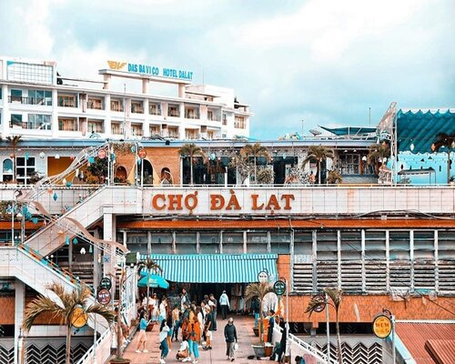

Chợ Đà Lạt - Nét Văn Hóa Sôi Động Giữa Vùng Đất Ngàn Hoa
Chợ Đà Lạt, một trong những điểm đến không thể bỏ qua khi đặt chân đến thành phố ngàn hoa tươi tắn - Đà Lạt. Chợ này không chỉ là nơi mua sắm hàng hóa đa dạng mà còn là kho tàng văn hóa độc đáo, thấm đẫm tinh thần của người dân xứ sở mộng mơ. Tọa lạc tại trung tâm thành phố, Chợ Đà Lạt không chỉ là điểm hẹn của người dân địa phương mà còn là nơi thu hút hàng nghìn du khách mỗi ngày. Không khí sôi động, năng động và phô diễn văn hóa độc đáo của vùng miền nơi đây, Chợ Đà Lạt trở thành bức tranh sinh động của cuộc sống đồng bào dân dụ.
Chợ hoạt động từ lúc bình minh đến khuya tối, tạo điều kiện thuận lợi cho những người yêu thích khám phá đêm và trải nghiệm ẩm thực độc đáo. Những quầy hàng đa dạng từ đồ ăn đường phố cho đến những sản phẩm nông sản tươi ngon, tất cả đều có mặt tại Chợ Đà Lạt. Không chỉ là nơi thương mại, Chợ Đà Lạt còn là đại sứ văn hóa của thành phố. Những sản phẩm truyền thống như các loại hoa, đồ dùng thủ công mỹ nghệ và quần áo truyền thống tinh tế là những đại diện xuất sắc của nền văn hóa độc đáo của người dân Đà Lạt. Chợ còn là nơi giao lưu văn hóa, nơi mà du khách có thể hòa mình vào cuộc sống hàng ngày của người dân địa phương. Sự giản dị, thân thiện của người bán hàng đã tạo nên một không khí giao thoa văn hóa đặc sắc. Khám phá Chợ Đà Lạt, du khách không chỉ có cơ hội mua sắm những sản phẩm độc đáo mà còn trải nghiệm không khí tràn ngập năng lượng tích cực và sự gần gũi với văn hóa Việt Nam. Chợ Đà Lạt không chỉ là điểm đến của những người yêu thương mua sắm mà còn là địa điểm lưu giữ và phát triển văn hóa truyền thống trong lòng thành phố xinh đẹp này.